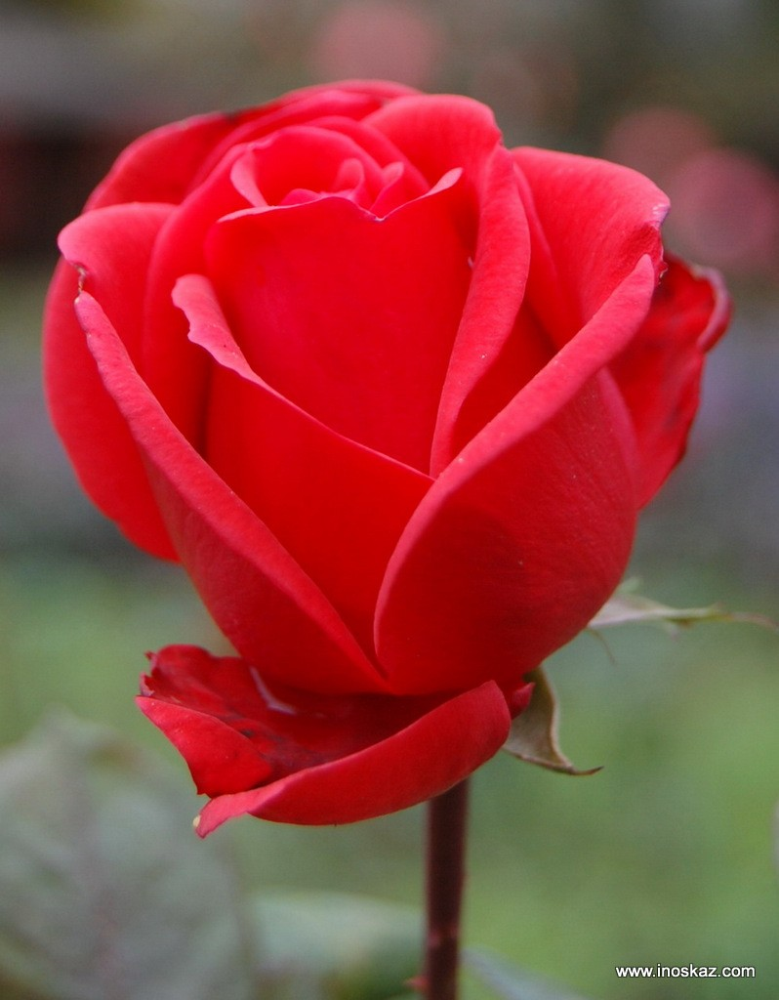
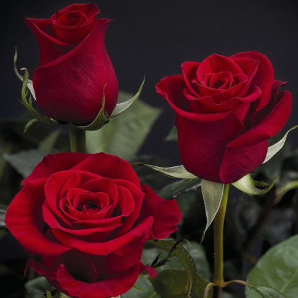

Троянда — це рід і культурна форма рослин родини розових.
Вона вважається однією з найкрасивіших квітів у світі, яку вирощують як у садах, так і в оранжереях.
Її історія налічує тисячі років.
Сьогодні існує величезна кількість сортів троянд.
Вони відрізняються за розміром, формою куща та кольором бутонів.
Більшість сучасних сортів є результатом тривалої селекційної роботи.
